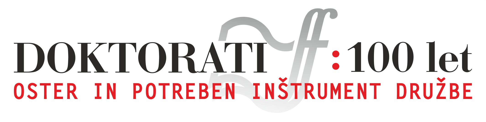

The exhibition covers only a fraction of more than two thousand doctorates. In selecting the represented individuals, we considered both their scientific acclaim and their life stories that followed the completion of the doctorate. Their relatives, friends, colleagues, mentors, and students have helped us in presenting both of these elements. Their complete stories will come to life online. Many of the witnesses are also Ph.D. students and successful scientists.
Barbara and Matija Bulatović, granddaughter and grandson of Anka Mayer Kansky.

Ženja Kansky Rožman with her daughter Nika standing in front of the portrait of grandmother Anka Mayer Kansky, painted by Rihard Jakopič.

Associate professor dr. Franc Perdih, a professor at the Faculty of Chemistry and Chemical Technology, has, among other things, devoted himself to exploring the work and life of Anka Mayer Kansky. Author: Kornelija Ajlec.

Full professor dr. Jurij Svete, Dean of the Faculty of Chemistry and Chemical Technology during the interview.
Professor dr. Stane Pejovnik, former Rector of the University of Ljubljana, Dean of the Faculty of Chemistry and Chemical Technology, and Director of the Chemical Institute after the interview.

Doc. dr. Peter Mikša researches the history of mountaineering and the symbolic importance of mountains.

Nana Žargi with her daughter Luna under the window where their great and great-great-aunt Alma Sodnik was photographed with her son Santo around 1918.
Professor Emeritus dr. Lev Kreft with Alma Sodnik's book Zgodovinski razvoj estetskih problemov.
Professor Emeritus dr. Valentin Kalan explores the philosophical thought and life of Alma Sodnik.
Children of Fran Zwitter: astrophysicist prof. dr. Tomaž Zwitter, librarian and archeologist dr. Anja Dular, oncologist prof. dr. Matjaž Zwitter.

Two of Fran Zwitter's eight grandchildren: doc. dr. Žiga Zwitter, who is a geographer and historian, and full professor dr. Matevž Dular, who lectures and researches at the Faculty of Mechanical Engineering.
Son of Valentin Logar and nephew of Cene Logar, Tine Logar, is a longtime editor of the Cankar publishing house. He holds photos of the Logar family with father Valentin and mother Božena Sernec Logar. Božena Sernec was among the first five doctors that organized the first medical cell of the Liberation Front in May 1941 and secretly treated the wounded in the hospital in Ljubljana. The second photo shows the Logar brothers in the Partisans.

Jadranka Šumi was a longtime associate of the Scientific Institute of the Faculty of Arts and a life companion of Nace Šumi. During the interview with Božo Repe.

Professor Emeritus dr. Dušan Nečak in his office. When Nace Šumi was Dean, he was his Vice-dean and later succeeded him. He also succeeded Šumi in the position of Head of the Scientific Institute of the Faculty of Arty.

Alenka Božič was a longtime proofreader of Mladinska knjiga. As a student, she regularly attended Dušan Pirjevec's lectures.
Daughter of Dušan Pirjevec, Alenka, in her home puppet studio.

Full professor dr. Matjaž Jager is an associate of Renata Salecl at the Institute of Criminology at the Faculty of Law. Source: Institute of Criminology website.
Dr. Spomenka Hribar and full professor Tine Hribar were personal friends of Dušan Pirjevec. During the interview with Božo Repe and Kornelija Ajlec.
Associate professor dr. Aleš Završnik, an associate of Renata Salecl at the Institute of Criminology at the Faculty of Law. Source: Institute of Criminology website.
Professor Emeritus dr. Zdenko Roter collaborated with Dušan Pirjevec outside the academic environment.
Full professor dr. Ibrahim Gashi, former Rector of the University of Priština, and Jusuf Osmani with Božo Repe and Božidar Flajšman in front of the Faculty of Arts in Priština.

Full professor dr. Cvetka Hedžet Tóth was a student of Dušan Pirjevec.
Full professor dr. Bujar Dugolli, Dean of the Faculty of Arts in Priština and historian, during the interview.

Professor Emeritus dr. Božidar Debenjak was a doctoral mentor to both Slavoj Žižek and Mladen Dolar.
Full professor dr. Tine Germ is a student and longtime colleague of Nataša Golob. Author: Matjaž Rebolj.